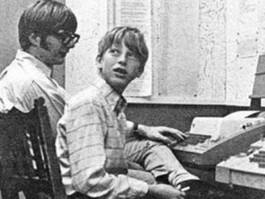

William Henry "Bill" Gates III sinh ngày 28 tháng 10 năm 1955 ở Seattle, Washington. Ông sinh ra và lớn lên trong gia đình khá giả; bố ông là một luật sư có tiếng, mẹ ông thuộc ban giám đốc của công ty tài chính và ông ngoại ông là chủ tịch của một ngân hàng liên bang.Khi còn nhỏ, nghề nghiệp của bố mẹ Bill Gates đã làm cho ông có ước mơ trở thành luật sư.
Bill Gates năm 1965
Năm 13 tuổi, ông vào học trường Lakeside, một trường dự bị cho các học sinh giỏi. Khi ông học lớp 8, Mothers Club ở trường này đã tài trợ một khoản tiền để mua một máy đánh chữ cơ điện Model 33 ASR và một máy tính của hãng General Electric (GE) cho các học sinh của trường. Gates thấy thích thú khi lập trình trên máy tính của GE bằng ngôn ngữ Basic (một ngôn ngữ lập trình bậc cao được phát minh vào 1963) và ông đã bỏ hầu hết các lớp toán để theo đuổi sở thích của mình. Cùng với năng khiếu và niềm đam mê ông đã nhanh chóng viết nên chương trình đầu tiên về trò chơi tic-tac-toe (gần giống caro thời nay), cho phép người chơi đấu với máy tính.
Khi quỹ của hội phụ huynh đã hết, ông và các học sinh khác chuyển sang các hệ máy khác bao gồm máy tính mini PDP của hãng DEC. Hãng này đã cấm bốn học sinh trường Lakeside bao gồm Bill Gates, Paul Allen (người đồng sáng lập Microsoft với Bill) và 2 người bạn khác của ông, sử dụng hệ máy tính này trong mùa hè sau khi bốn người này đã khai thác các lỗi trong hệ điều hành để nhận được thêm thời gian sử dụng hệ máy tính này.
Thời đi học của Bill Gates ở Lakeside
Khi hết hạn cấm, bốn học sinh này đã đề nghị với công ty là sẽ tìm ra lỗi trong hệ điều hành đổi lại họ phải được sử dụng máy tính miễn phí. Trong khoảng thời gian này Bill đã thường xuyên đến công ty để nghiên cứu mã nguồn các chương trình khác nhau. Ông còn được thuê viết chương trình có lương cho một công ty khác và viết thời khóa biểu cho nhà trường. Bấy giờ hầu hết thời gian của ông đều dành cho việc lập trình và nghiên cứu máy tính. Sau này ông nhận xét: “thật khó có thể tách tôi ra khỏi máy tính mà rõ ràng tôi có thể chứng minh sự thành công từ nó”.
Bill Gates và niềm đam mê máy tính
Gates tốt nghiệp trường Lakeside vào năm 1973. Ông đạt được 1590 trên 1600 điểm ở kỳ thi SAT và ghi danh vào Đại học Harvard trong mùa thu năm 1973. Gates không có kế hoạch học tập cụ thể ở Harvard và ông đã giành nhiều thời gian bên cạnh các máy tính ở trường. Sau đó hai năm (năm 1975), ông đã bỏ học tại Harvard để thành lập và phát triển công ty Microsoft. Đó là điều mà những người cùng thời đều nghĩ điên rồ và mạo hiểm đối với một thanh niên trẻ. Bên cạnh việc lập trình và nghiên cứu máy tính thì ông dùng phần lớn thời gian của mình vào việc đọc sách. Ông đọc hầu hết bách khoa toàn thư của thế giới, điều đó góp phần không nhỏ cho thành công của ông sau này.
Bill Gates tốt nghiệp ở Lakeside
Nguồn: Wikipedia